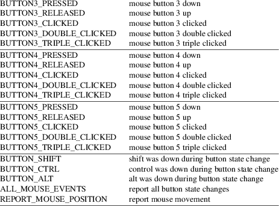

has_mouse, getmouse, ungetmouse, mousemask, wenclose, mouse_trafo, wmouse_trafo, mouseinterval − mouse interface through curses
#include <curses.h>
typedef unsigned long mmask_t;
typedef
struct {
short id; /* ID to distinguish multiple devices
*/
int x, y, z; /* event coordinates */
mmask_t bstate; /* button state bits */
} MEVENT;
bool has_mouse(void);
int
getmouse(MEVENT *event);
int ungetmouse(MEVENT *event);
mmask_t mousemask(mmask_t newmask, mmask_t *oldmask);
bool wenclose(const WINDOW *win, int y, int x);
bool
mouse_trafo(int* pY, int* pX,
bool to_screen);
bool wmouse_trafo(const WINDOW* win,
int* pY, int* pX, bool
to_screen);
int mouseinterval(int erval);
These functions provide an interface to mouse events from ncurses(3X). Mouse events are represented by KEY_MOUSE pseudo-key values in the wgetch(3X) input stream.
mousemask
To make mouse events visible, use the mousemask
function. This sets the mouse events to be reported. By
default, no mouse events are reported.
|
• |
The function returns an updated copy of newmask to indicate which of the specified mouse events can be reported. |
If the screen has not been initialized, or if the terminal does not support mouse-events, this function returns 0.
|
• |
If oldmask is non-NULL, this function fills the indicated location with the previous value of the current screen’s mouse event mask. |
As a side effect, setting a zero mousemask may turn off the mouse pointer; setting a nonzero mask may turn it on. Whether this happens is device-dependent.
Mouse
events
Here are the mouse event type masks which may be
defined:

getmouse
Once a class of mouse events has been made visible in a
window, calling the wgetch function on that window
may return KEY_MOUSE as an indicator that a mouse
event has been queued. To read the event data and pop the
event off the queue, call getmouse. This function
will return OK if a mouse event is actually visible
in the given window, ERR otherwise. When
getmouse returns OK, the data deposited as y
and x in the event structure coordinates will be
screen-relative character-cell coordinates. The returned
state mask will have exactly one bit set to indicate the
event type. The corresponding data in the queue is marked
invalid. A subsequent call to getmouse will retrieve
the next older item from the queue.
ungetmouse
The ungetmouse function behaves analogously to
ungetch. It pushes a KEY_MOUSE event onto the
input queue, and associates with that event the given state
data and screen-relative character-cell coordinates.
wenclose
The wenclose function tests whether a given pair of
screen-relative character-cell coordinates is enclosed by a
given window, returning TRUE if it is and
FALSE otherwise. It is useful for determining what
subset of the screen windows enclose the location of a mouse
event.
wmouse_trafo
The wmouse_trafo function transforms a given pair of
coordinates from stdscr-relative coordinates to coordinates
relative to the given window or vice versa. The resulting
stdscr-relative coordinates are not always identical to
window-relative coordinates due to the mechanism to reserve
lines on top or bottom of the screen for other purposes (see
the ripoffline and slk_init(3X) calls, for
example).
|
• |
If the parameter to_screen is TRUE, the pointers pY, pX must reference the coordinates of a location inside the window win. They are converted to window-relative coordinates and returned through the pointers. If the conversion was successful, the function returns TRUE. | ||
|
• |
If one of the parameters was NULL or the location is not inside the window, FALSE is returned. | ||
|
• |
If to_screen is FALSE, the pointers pY, pX must reference window-relative coordinates. They are converted to stdscr-relative coordinates if the window win encloses this point. In this case the function returns TRUE. | ||
|
• |
If one of the parameters is NULL or the point is not inside the window, FALSE is returned. The referenced coordinates are only replaced by the converted coordinates if the transformation was successful. |
mouse_trafo
The mouse_trafo function performs the same
translation as wmouse_trafo, using stdscr for
win.
mouseinterval
The mouseinterval function sets the maximum time (in
thousands of a second) that can elapse between press and
release events for them to be recognized as a click. Use
mouseinterval(0) to disable click resolution. This
function returns the previous interval value. Use
mouseinterval(−1) to obtain the interval
without altering it. The default is one sixth of a
second.
has_mouse
The has_mouse function returns TRUE if the
mouse driver has been successfully initialized.
Note that mouse events will be ignored when input is in cooked mode, and will cause an error beep when cooked mode is being simulated in a window by a function such as getstr that expects a linefeed for input-loop termination.
getmouse and ungetmouse return the integer ERR upon failure or OK upon successful completion:
getmouse
returns an error.
|
• |
If no mouse driver was initialized, or if the mask parameter is zero, | ||
|
• |
It returns an error if a mouse event was detected which did not match the current mousemask. | ||
|
• |
It also returns an error if no more events remain in the queue. |
ungetmouse
returns an error if the FIFO is full.
mousemask returns the mask of reportable events.
mouseinterval returns the previous interval value, unless the terminal was not initialized. In that case, it returns the maximum interval value (166).
wenclose and wmouse_trafo are boolean functions returning TRUE or FALSE depending on their test result.
These calls were designed for ncurses(3X), and are not found in SVr4 curses, 4.4BSD curses, or any other previous version of curses.
SVr4 curses had support for the mouse in a variant of xterm(1). It is mentioned in a few places, but with no supporting documentation:
|
• |
the “libcurses” manual page lists functions for this feature which are prototyped in curses.h: |
extern int mouse_set(long int); extern int mouse_on(long int); extern int mouse_off(long int); extern int request_mouse_pos(void); extern int map_button(unsigned long); extern void wmouse_position(WINDOW *, int *, int *); extern unsigned long getmouse(void), getbmap(void);
|
• |
the “terminfo” manual page lists capabilities for the feature |
buttons btns BT Number of buttons on the mouse get_mouse getm Gm Curses should get button events key_mouse kmous Km 0631, Mouse event has occurred mouse_info minfo Mi Mouse status information req_mouse_pos reqmp RQ Request mouse position report
|
• |
the interface made assumptions (as does ncurses) about the escape sequences sent to and received from the terminal. |
For instance the SVr4 curses library used the get_mouse capability to tell the terminal which mouse button events it should send, passing the mouse-button bit-mask to the terminal. Also, it could ask the terminal where the mouse was using the req_mouse_pos capability.
Those features required a terminal which had been modified to work with curses. They were not part of the X Consortium’s xterm.
When developing the xterm mouse support for ncurses in September 1995, Eric Raymond was uninterested in using the same interface due to its lack of documentation. Later, in 1998, Mark Hesseling provided support in PDCurses 2.3 using the SVr4 interface. PDCurses, however, does not use video terminals, making it unnecessary to be concerned about compatibility with the escape sequences.
The feature macro NCURSES_MOUSE_VERSION is provided so the preprocessor can be used to test whether these features are present. If the interface is changed, the value of NCURSES_MOUSE_VERSION will be incremented. These values for NCURSES_MOUSE_VERSION may be specified when configuring ncurses:
|
1 |
has definitions for reserved events. The mask uses 28 bits. | ||
|
2 |
adds definitions for button 5, removes the definitions for reserved events. The mask uses 29 bits. |
The order of the MEVENT structure members is not guaranteed. Additional fields may be added to the structure in the future.
Under ncurses(3X), these calls are implemented using either xterm’s built-in mouse-tracking API or platform-specific drivers including
|
• |
Alessandro Rubini’s gpm server |
|||
|
• |
FreeBSD sysmouse |
|||
|
• |
OS/2 EMX |
If you are using an unsupported configuration, mouse events will not be visible to ncurses(3X) (and the mousemask function will always return 0).
If the terminfo entry contains a XM string, this is used in the xterm mouse driver to control the way the terminal is initialized for mouse operation. The default, if XM is not found, corresponds to private mode 1000 of xterm:
\E[?1000%?%p1%{1}%=%th%el%;
The mouse driver also recognizes a newer xterm private mode 1006, e.g.,
\E[?1006;1000%?%p1%{1}%=%th%el%;
The z member in the event structure is not presently used. It is intended for use with touch screens (which may be pressure-sensitive) or with 3D-mice/trackballs/power gloves.
The ALL_MOUSE_EVENTS class does not include REPORT_MOUSE_POSITION. They are distinct. For example, in xterm, wheel/scrolling mice send position reports as a sequence of presses of buttons 4 or 5 without matching button-releases.
Mouse events under xterm will not in fact be ignored during cooked mode, if they have been enabled by mousemask. Instead, the xterm mouse report sequence will appear in the string read.
Mouse events under xterm will not be detected correctly in a window with its keypad bit off, since they are interpreted as a variety of function key. Your terminfo description should have kmous set to “\E[M” (the beginning of the response from xterm for mouse clicks). Other values for kmous are permitted, but under the same assumption, i.e., it is the beginning of the response.
Because there are no standard terminal responses that would serve to identify terminals which support the xterm mouse protocol, ncurses assumes that if kmous is defined in the terminal description, or if the terminal description’s primary name or aliases contain the string “xterm”, then the terminal may send mouse events. The kmous capability is checked first, allowing the use of newer xterm mouse protocols such as xterm’s private mode 1006.
curses(3X), curs_inopts(3X), curs_kernel(3X), curs_slk(3X), curs_variables(3X).